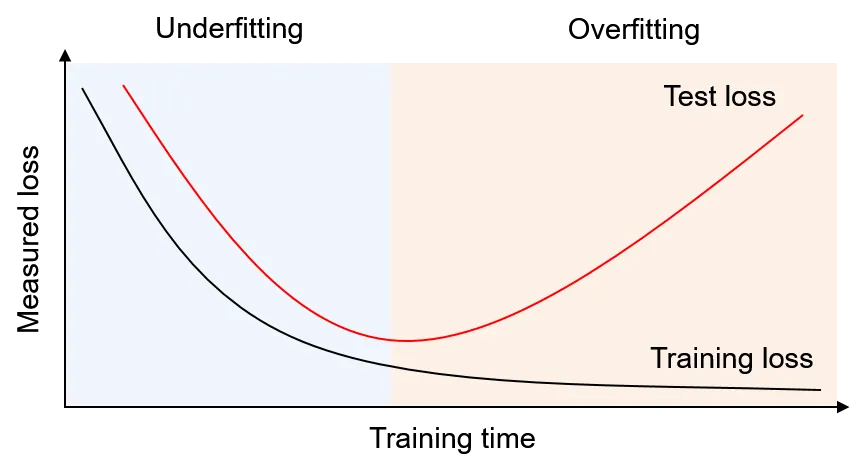

입력층
문제를 이루는 숫자와 픽셀 값을 받아들입니다.
Part 1 · Multi Layer Perception
층을 깊고 넓게 만들면 더 복잡한 패턴을 배울 가능성이 커집니다. 하지만 답을 외워 버리는 순간, 새로운 문제를 푸는 힘은 오히려 약해집니다.
MLP Structure · S32
다층 퍼셉트론(Multi Layer Perception, MLP)은 입력층·은닉층·출력층을 차례로 통과하며 데이터를 답으로 바꿉니다.
문제를 이루는 숫자와 픽셀 값을 받아들입니다.
가중치와 활성화 함수로 데이터의 패턴을 분석합니다.
분석 결과를 우리가 원하는 정답 형태로 내보냅니다.
Bigger Is Better? · S33–34
더 깊고 넓으면 표현력, 즉 표현 가능한 함수의 복잡도가 증가합니다. 복잡한 패턴을 학습할 ‘가능성’은 커지지만 반드시 더 좋은 모델이 되는 것은 아닙니다.
깊고 넓은 모델은 단순한 모델보다 복잡한 패턴을 표현할 가능성이 큽니다.
모델이 너무 크면 훈련 데이터의 잡음과 우연까지 외웁니다. 훈련 정확도는 높아도 검증·테스트 성능은 떨어질 수 있습니다.
파라미터가 많아지면 최적화가 어려워지고, 학습이 느려지거나 특정 설정에서 수렴이 더 까다로울 수 있습니다.
속도와 메모리 부담이 커져 여러 설정을 반복해서 실험하기가 어려워집니다.
Underfit vs Overfit · S33
모델이 너무 단순해서 학습 데이터의 규칙조차 충분히 배우지 못한 상태입니다.
학습 데이터를 과하게 암기해 버려서 새로운 데이터를 제대로 풀지 못하는 상태입니다.

How to Train · S35
작은 모델로 시작해 먼저 유닛 수를 조금 늘리고, 그래도 부족하면 은닉층 수를 늘립니다. 이때 Early Stopping과 Dropout 같은 과적합 방지 장치를 함께 적용합니다.
중간중간 보는 모의고사인 검증 성능이 좋아질 때는 학습을 계속합니다. 검증 오차가 다시 커지려는 순간에는 “답만 외우고 있으니 멈춰!”라고 판단해 학습을 강제로 종료합니다.
특정 뉴런만 의존하지 않도록 학습할 때마다 뉴런 일부를 무작위로 꺼 버립니다. 남은 뉴런들이 힘을 합쳐 문제를 풀면서 한 선수에게만 기대는 과적합을 줄입니다.
필요한 규칙을 배울 수 있는 최소 구조에서 출발합니다.
표현력이 부족하다면 먼저 각 층의 유닛을 조금 늘립니다.
더 복잡한 패턴이 필요할 때 층을 늘리고 과적합 방지 장치를 적용합니다.
Quick Check
답을 고르면 바로 해설이 나타납니다.
답을 고르면 바로 해설이 나타납니다.